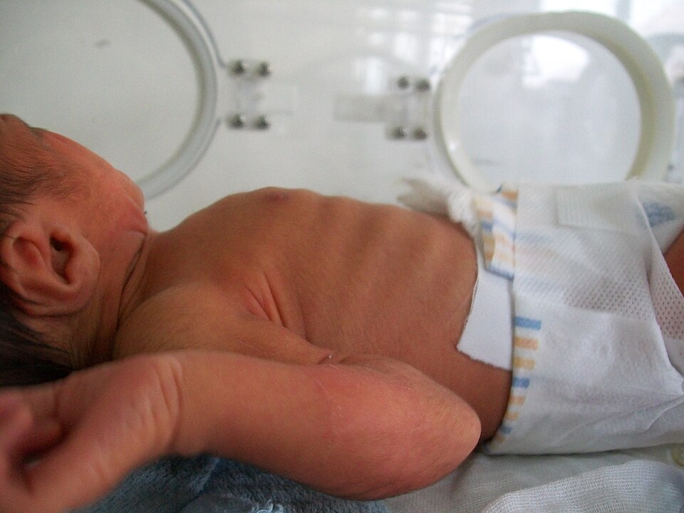
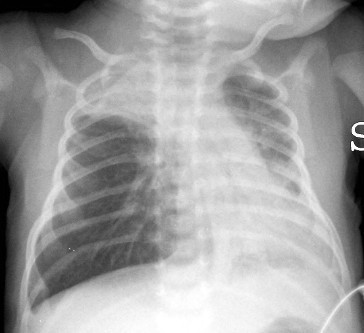

衛教目錄 › 呼吸道 › 細支氣管炎
細支氣管炎
2 歲以下的寶寶感冒後，開始咳嗽、呼吸變快、胸口凹陷、喉嚨有「咻咻」聲——這通常是細支氣管炎。最常見的病毒是 RSV（呼吸道融合病毒）。大多數寶寶在家照顧就會好，但小嬰兒要特別注意呼吸和喝奶狀況。
2 歲以下最常見，3–6 個月大的寶寶最容易變嚴重
第 3–5 天症狀通常最嚴重，之後慢慢改善
2–4 週咳嗽可能拖這麼久，屬於正常恢復過程
1細支氣管炎是什麼？
肺裡的氣管像一棵倒過來的樹，越分越細，最末端的小分枝叫細支氣管。病毒感染後，這些細細的管子會發炎腫脹、塞滿黏液和脫落的細胞，空氣進出變得困難，所以寶寶會喘、呼吸變快。小嬰兒的氣管本來就很細，一點點腫脹就影響很大。
最常見的病毒：RSV 約占一半以上，其他還有鼻病毒、人類間質肺炎病毒、副流感病毒等。
流行季節：台灣全年都有，常在秋冬與春季形成高峰。
比較容易變嚴重：3 個月以下、早產兒、先天性心臟病、慢性肺病、免疫低下的寶寶。
不需要抗生素：這是病毒感染，抗生素沒有幫助。
2病程
3看懂寶寶的呼吸喘
這段影片是一位 18 個月大、得到細支氣管炎的孩子。注意看他的呼吸很快（每分鐘 55–60 次）、脖子跟著用力、吐氣時有聲音。當時測得的血氧是 92%，已經偏低。
Cdang／Wikimedia Commons／CC BY-SA 3.0，轉為 WebM 格式

Bobjgalindo／Wikimedia Commons／CC BY-SA 4.0，已縮小
在家怎麼數呼吸
寶寶安靜或睡著時，掀開衣服看肚子起伏，數滿 1 分鐘。
| 年齡 | 呼吸太快 |
|---|---|
| < 2 個月 | ≥ 60 次／分 |
| 2–12 個月 | ≥ 50 次／分 |
| 1–5 歲 | ≥ 40 次／分 |
依世界衛生組織呼吸過快標準。
聽聽看「咻咻聲」（喘鳴）
James Heilman, MD／Wikimedia Commons／CC BY-SA 3.0，降噪版、轉為 MP3
喘鳴是氣管變窄時，空氣擠過去發出的高音調「咻——」聲，吐氣時比較明顯。和哮吼吸氣時的喘鳴（聽聽看哮吼的聲音）不同。
4居家照顧
- 清鼻涕最重要：小嬰兒主要用鼻子呼吸，鼻塞會讓喘和喝奶更困難。餵奶前、睡前用生理食鹽水噴霧加吸鼻器清潔（方法見洗鼻噴霧教學）。
- 少量多次餵奶：喘的時候一次喝不多，可以縮短間隔、每次少一點；注意尿量。
- 頭部稍微墊高，寶寶會比較好呼吸；仍要遵守安全睡眠原則，仰睡、不要放枕頭或軟物。
- 發燒或不舒服可使用醫師開立的退燒藥。
- 遠離菸害：家中不吸菸，菸味會讓症狀更嚴重。
- 不需要的藥：抗生素、止咳糖漿、化痰藥對細支氣管炎都沒有幫助；吸入型支氣管擴張劑或類固醇，一般也不建議 [1,4]。
5何時要就醫？
出現以下情況，請立刻到急診
- 呼吸很快（超過上表數字）、胸口或肋骨明顯凹陷、鼻翼搧動、發出呻吟聲
- 嘴唇或臉色發紫、發白
- 小嬰兒出現呼吸暫停，或呼吸時快時停
- 喝奶量少於平常一半，或 6–8 小時以上沒有尿
- 精神很差、嗜睡、叫不太醒，或非常煩躁
- 3 個月以下的寶寶發燒（≥ 38°C）
這些情況請安排門診
- 早產兒、有心臟病、慢性肺病或免疫問題的寶寶出現咳嗽或喘
- 症狀超過 1 週沒有改善，或好轉後又發燒
- 咳嗽超過 4 週，或反覆發生喘鳴（可能需要評估氣喘）
6細支氣管炎和氣喘怎麼區分？
兩者都會咳嗽、呼吸喘、聽到咻咻聲，所以家長常常搞混。最大的差別是：細支氣管炎是一次性的病毒感染，氣喘是反覆發作的慢性體質。
| 比較 | 細支氣管炎 | 氣喘 |
|---|---|---|
| 年齡 | 多在 2 歲以下，尤其 1 歲內 | 任何年齡；5 歲以下診斷較困難，學齡兒童較明確 |
| 次數 | 通常是第一次喘 | 反覆發作（例如一年 3 次以上） |
| 誘發 | 病毒感染（尤其 RSV） | 感冒、運動、大笑或哭、冷空氣、塵蟎、寵物、菸 |
| 前驅症狀 | 先流鼻水、輕咳 2–3 天，再慢慢變喘 | 可能很快就喘起來；兩次發作之間也可能夜咳、運動後咳 |
| 兩次之間 | 好了就沒症狀 | 常有夜間或清晨咳嗽、運動後喘 |
| 吸入支氣管擴張劑 | 通常幫助不大 | 效果明顯，幾分鐘到幾十分鐘內改善 |
| 個人／家族史 | 不一定 | 常有異位性皮膚炎、過敏性鼻炎，或父母有氣喘 |
| 病程 | 約 1–2 週改善，咳嗽可拖 2–4 週 | 慢性，需要長期控制與預防 |
BruceBlaus（Blausen Medical）／Wikimedia Commons／CC BY 3.0，標示改為中文
得過細支氣管炎，以後會變氣喘嗎？嚴重的 RSV 細支氣管炎和日後反覆喘鳴有關，但大多數孩子不會發展成氣喘。如果孩子在細支氣管炎之後反覆喘、夜咳、運動後喘，或有過敏體質，請和醫師討論是否需要評估氣喘 [5]。
7預防
- 勤洗手：RSV 可在手上和物品表面存活數小時，抱寶寶前先洗手。
- 減少接觸感冒的人：家中大人或哥哥姊姊感冒時戴口罩；小嬰兒少去人多的密閉空間。
- 哺餵母乳、遠離菸害。
- RSV 長效單株抗體：出生後打一劑，可以保護寶寶度過第一個 RSV 季節（約 5–6 個月）。早產兒等高風險寶寶有健保給付的短效單株抗體；長效型目前多為自費，請與醫師討論 [7]。
- 孕婦 RSV 疫苗：懷孕 32–36 週接種，抗體會經胎盤保護出生後的寶寶 [6]。
近五年實證重點（2026/11 整理）
- Nirsevimab（長效 RSV 單株抗體）：MELODY（足月與晚期早產兒）：就醫的 RSV 下呼吸道感染下降 74.5% [2]；HARMONIE（真實情境）：RSV 下呼吸道感染住院下降 83.2% [3]。
- 孕婦 RSVpreF 疫苗（MATISSE）：出生後 90 天內嚴重 RSV 下呼吸道感染效力 81.8%，180 天內 69.4% [6]。
- 高張食鹽水（Cochrane 2023）：門診／急診使用可能使住院風險下降約 13%（低確定性），住院天數縮短有限；AAP 不建議在急診使用 [1,4]。
- GINA 2025：5 歲以下可依臨床診斷氣喘：①反覆急性喘鳴發作；②沒有其他更可能的原因；③對氣喘藥物有及時的臨床反應 [5]。細支氣管炎是 1 歲以下喘鳴的主要鑑別 [5]。
- 台灣：早產兒等高風險族群有健保給付的 palivizumab；長效單株抗體健保給付尚待廠商申請，全面公費仍在倡議中 [7]。
診斷與評估
- 臨床診斷（病史＋理學檢查）：< 2 歲，病毒性上呼吸道前驅症狀後出現咳嗽、呼吸急促、胸凹、喘鳴和／或濕囉音 [1]。
- 不需常規：胸部 X 光、病毒檢測、血液檢查 [1]。
- 高風險因子：< 12 週大、早產、血流動力學顯著的先天性心臟病、慢性肺病、神經肌肉疾病、免疫低下 [1]。
- 評估重點：呼吸速率與費力程度、SpO₂、進食與水分、呼吸暫停（小嬰兒）。清除鼻腔分泌物後再評估，嚴重度常會改變。
- SpO₂：不需連續監測於病情穩定、未給氧者；AAP 以 SpO₂ ≥ 90% 為可接受 [1]。

Di Nardo M, et al.／Wikimedia Commons／CC BY 2.0
處置
| 項目 | 建議 |
|---|---|
| 鼻腔抽吸 | 表淺抽吸可改善進食與呼吸；避免頻繁深部抽吸（與住院天數延長有關）。 |
| 氧氣 | SpO₂ < 90% 時給氧 [1]。 |
| 水分 | 無法經口足夠進食時，給予鼻胃管或靜脈等張輸液 [1]。 |
| 高流量鼻導管（HFNC） | RCT：病房早期使用 HFNC，治療升級比例較低（12% vs 23%），但住院天數與氧氣使用時間無差異 [8]；多數指引作為標準氧氣不足時的升級選項。 |
| 住院考量 | 持續 SpO₂ < 90%、明顯呼吸費力或呼吸暫停、無法維持水分、< 2–3 個月或有高風險因子、家庭照護條件不足。 |
不建議的治療（AAP 2014）[1]
- Albuterol（salbutamol）：不建議；不建議常規「試用看看」。
- Epinephrine：不建議。
- 全身性類固醇：不建議。
- 高張食鹽水：急診不建議；住院且預期住院 > 3 天者可考慮（弱建議）[1,4]。
- 胸腔物理治療：不建議。
- 抗生素：除非有明確細菌感染（如急性中耳炎、泌尿道感染）。
與氣喘（學齡前喘鳴）的鑑別
| 線索 | 傾向細支氣管炎 | 傾向氣喘／反覆喘鳴 |
|---|---|---|
| 年齡 | < 12 個月，第一次喘鳴 | > 12 個月，反覆發作 |
| 理學檢查 | 濕囉音（crackles）與喘鳴並存、鼻漏明顯 | 以呼氣性喘鳴為主、呼氣延長 |
| 對 SABA 反應 | 通常不明顯 | 明顯且迅速（GINA 診斷要件之一）[5] |
| 發作間期 | 無症狀 | 夜咳、運動、大笑或哭誘發症狀 [5] |
| 背景 | — | 異位性皮膚炎、食物過敏、氣過敏原致敏、父母氣喘、嗜酸性球增加 |
- GINA 2025 五歲以下氣喘診斷：反覆急性喘鳴發作＋無其他可能原因＋對氣喘藥物有及時反應 [5]。
- 紅旗（要考慮其他診斷）：持續性喘鳴、出生即有症狀、生長遲滯、餵食時嗆咳或嘔吐、局部聽診異常、杵狀指、對氣喘藥物無反應——需排除異物、胃食道逆流吸入、先天氣道異常、囊性纖維化、原發性纖毛運動障礙等 [5]。
- 細支氣管炎後反覆喘鳴：若一年內多次發作或對 SABA 反應良好，可依 GINA 試用規律吸入型類固醇 3 個月並評估反應 [5]。
RSV 預防
| 產品 | 對象與用法 | 效力 |
|---|---|---|
| Nirsevimab（長效單株抗體） | 第一個 RSV 季節的嬰兒單劑 IM：< 5 kg 50 mg、≥ 5 kg 100 mg；高風險兒第二季可再用 [2,3] | 就醫 RSV 下呼吸道感染 ↓74.5% [2]；住院 ↓83.2% [3] |
| 孕婦 RSVpreF 疫苗 | 懷孕 32–36 週單劑；母親接種 ≥ 14 天後出生的嬰兒通常不需再打 nirsevimab [6] | 90 天內嚴重 RSV 下呼吸道感染 ↓81.8% [6] |
| Palivizumab（短效） | 高風險嬰兒（早產、慢性肺病、先天性心臟病）每月一劑；台灣健保依條件給付 [7] | — |
參考資料
- Ralston SL, Lieberthal AS, Meissner HC, et al. Clinical practice guideline: the diagnosis, management, and prevention of bronchiolitis. Pediatrics. 2014;134(5):e1474–e1502. AAP 指引（現行版）
- Hammitt LL, Dagan R, Yuan Y, et al. Nirsevimab for prevention of RSV in healthy late-preterm and term infants. N Engl J Med. 2022;386(9):837–846. doi:10.1056/NEJMoa2110275 RCT（MELODY）
- Drysdale SB, Cathie K, Flamein F, et al. Nirsevimab for prevention of hospitalizations due to RSV in infants. N Engl J Med. 2023;389(26):2425–2435. doi:10.1056/NEJMoa2309189 RCT（HARMONIE）
- Zhang L, Mendoza-Sassi RA, Wainwright CE, et al. Nebulised hypertonic saline solution for acute bronchiolitis in infants. Cochrane Database Syst Rev. 2023;4:CD006458. doi:10.1002/14651858.CD006458.pub5 Cochrane 回顧
- Global Initiative for Asthma. Global strategy for asthma management and prevention, 2025 update（含 5 歲以下兒童章節）. GINA 2025
- Kampmann B, Madhi SA, Munjal I, et al. Bivalent prefusion F vaccine in pregnancy to prevent RSV illness in infants. N Engl J Med. 2023;388(16):1451–1464. RCT（MATISSE）
- 中央社、工商時報報導：RSV 長效單株抗體健保審查待廠商送件、專家倡議納入公費（2026 年 4–5 月）. 台灣政策
- Franklin D, Babl FE, Schlapbach LJ, et al. A randomized trial of high-flow oxygen therapy in infants with bronchiolitis. N Engl J Med. 2018;378(12):1121–1131. RCT
文獻搜尋截至 2026 年 11 月。AAP 尚未發布 2014 年後的細支氣管炎指引更新；HFNC 試驗（2018）超過五年，仍列入供參考。
本頁內容整理於 2026 年 11 月，供門診衛教與醫療人員參考，不能取代個別的診察與判斷。藥物劑量請以藥品仿單及最新指引為準。